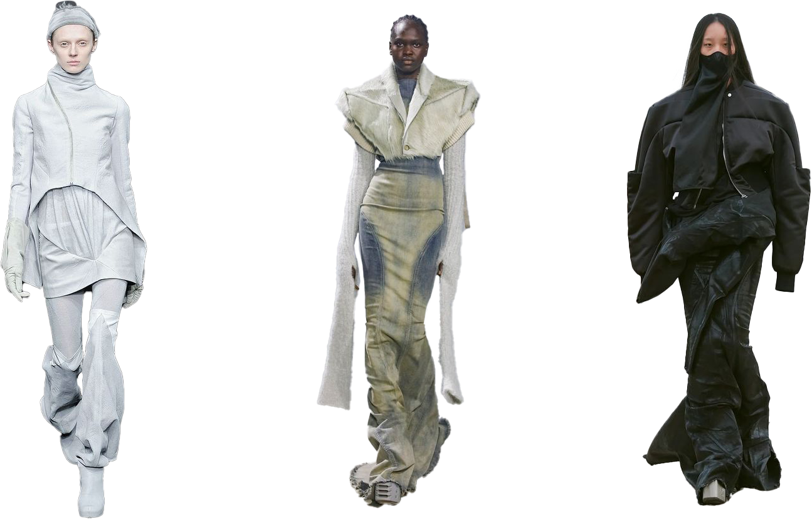
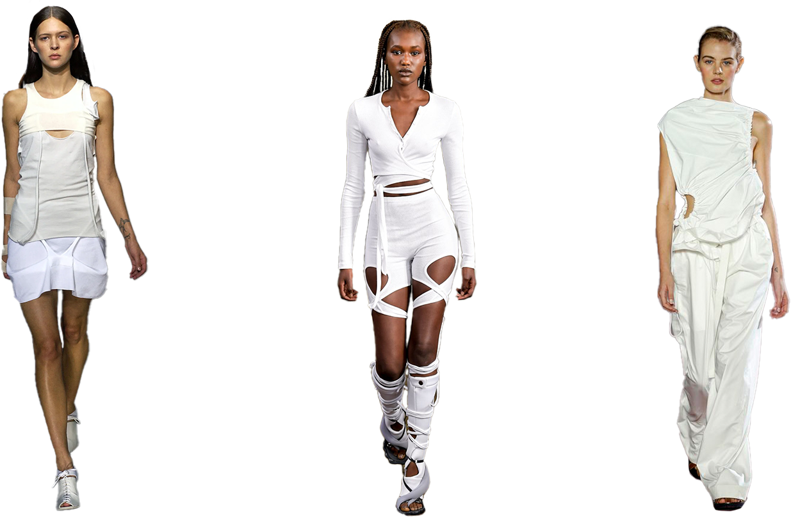
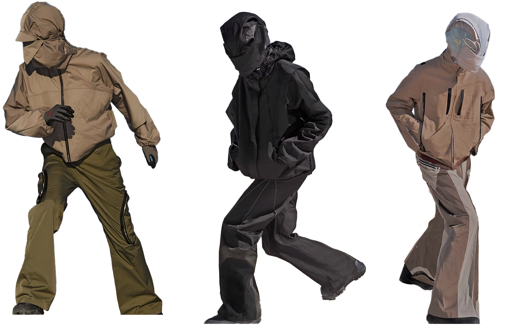

Styles
All the Korean brands discussed on my website have a certain genre or style in common, they all represent Avant-garde style in some way and influences of subversive basics and gorpcore is seen through and through in the designs of the brands.
The brands are each very unique and have their own certain style but they are all experimental and have a certain boldness. The abstract shapes and the layering in the single garments create a futuristic look in the collections of these brands discussed on this website.
Avant-Garde Streetwear
AVANT GARDE STYLE: BREAKING THE RULES OF TRADITIONAL FASHION

^Rick Owens fall collections (in order) 2009-2022-2021^
Avant garde is originally a French term, meaning in English vanguard or advance guard (the part of an army that goes forward ahead of the rest). It first appeared with reference to art in France in the first half of the nineteenth century, and is usually credited to the influential thinker Henri de Saint-Simon, one of the forerunners of socialism. He believed in the social power of the arts and saw artists, alongside scientists and industrialists, as the leaders of a new society.
Avant-garde style is a type of art and design that is experimental, innovative, and often ahead of its time. It is characterized by its boldness, unconventionality, and its rejection of traditional aesthetic values.
The garments are often monochromatic in color and exist mainly of natural colortints often on the more muted side of the color spectrum, if not black.
Some of my top Avant-garde brands are Rick Owens, Yohji Yamamoto, Vivienne Westwood, Iris Van Herpen en Issey Miyake. Some designs appear simple but when worn together they create complex, beautiful voluminous multi layer looks typical to the Avant-Garde style.
Subversive Basics
SUBVERSIVE BASICS: MINIMALISTIC BUILDING BLOCKS
As an act of social freedom and resistance against societal commentaries, we look into the subversive fashion of the contemporary era.
Think of unique cutouts, sheer fabrics and unconventional straps all tied in to one. It’s a futuristic approach to our everyday basics.
These pieces, often in muted tones, are a twist on the basic everyday garments and serve as outfit building blocks as well.

^Subversive basics designs by Helmut Lang (spring 2004) - Ottolinger (spring/summer 2024) - JOSEPH (spring 2017)^
Fashion has always been a tool for some to rebel against conformities. Since the French Revolution, we have seen how French Royalty, Marie Antoinette utilised fashion politically to challenge the court. Over the several decades, artists and designers have begun to use fashion as a medium for communication, creating an impactful voice in the industry.
Designers like KNWLS, Ottolinger, and ISABOULDER play with layering stockings, prints, knits, and lazer cutouts, showing skin where necessary, to create new texture.
A lot of these minimal, grunge-chic fabric details and techniques walked the runway throughout the 1990s.
Some brands that widely create subversive basics designs are Ottolinger, Helmut Lang, Rick Owens, Hyein Seo and Issey Miyake.
Outerwear (Gorpcore)
Gorpcore is a fashion style that fuses practicality with style. Derived from "GORP," an acronym for "Good Old Raisins and Peanuts", the term signifies the mix of rugged outdoors attire with everyday casual wear. Imagine the merger of hiking boots, cargo pants, technical vests, and down jackets, with the touch of a luxury brand, and you've got Gorpcore.

^Collection of FFFPostalservice (fall/winter 2023)^
The trend gained popularity for its focus on comfort, practicality, and durability, embodying a sense of nostalgia for the great outdoors even when worn in an urban setting. It has been seen as a reaction to more restricting and impractical fashion norms, gaining momentum as more people seek clothing that serves multiple functions.
More and more luxury houses collaborate with many outdoor brands like the Reese Cooper X Prada Outdoor Capsule, Gucci X North Face, Jil Sander X Arc'teryx and the Margiela X Salomon shoes (spring/summer 2023).
Some of my favorite brands that merge outdoor technical wear with casual wear into a fashionable outerwear aesthetic are Arc'teryx, Roa, Post Archive Faction, FFF Postalservice, and Nike ACG.